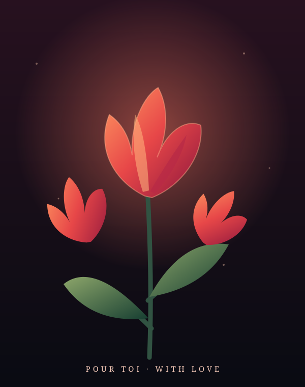
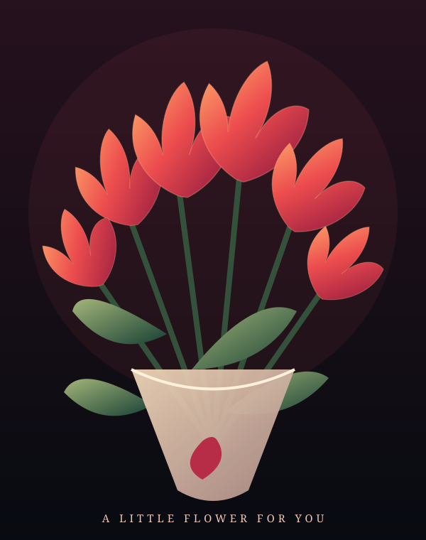

أول وردة لكِ أنتِ
لم أستطع أن أضع وردة حقيقية بين يديكِ الآن، فصنعتُ لكِ هذه المساحة الصغيرة… لتكون أول وردة، في حكاية أتمنى أن تطول.

لو كان بإمكاني،
لأهديتُكِ حديقةً كاملة.
لكنني أردت أن أبدأ بوردة واحدة… وردة تشبه تلك التي تحبينها، واخترتُها وأنا أفكر فيكِ.
أحبّ أن أشارككِ تفاصيل يومي، وأن أحكي لكِ الأشياء الصغيرة قبل الكبيرة، وأن أجد في نهاية يومي شخصاً أريد أن أخبره بكل ما حدث… وأنتِ ذلك الشخص.
لا أعدكِ بأن تكون كل الأيام مثالية، لكنني أتمنى أن نبقى قادرين على الكلام، وأن نفهم بعضنا، وأن نختار بعضنا حتى حين لا تسير الأمور كما نحب.
وأتمنى أن تصلكِ هذه الكلمات كما كتبتها: بقلبٍ يحبّكِ، ويريد أن يصنع معكِ ذكريات حقيقية، لا أن يكتفي بالكلام عنها.
اضغطي على كل وردة صغيرة
خبّأتُ لكِ هنا بعض الكلمات. افتحيها واحدةً واحدة، وخذي وقتكِ في قراءتها.
هذه ليست النهاية

إنها فقط بداية حكاية صغيرة… والجزء الأجمل منها لم يصل بعد.
«ويوم أجيب لكِ أول وردة حقيقية، تذكّري أول وردة إلكترونية أهديتُها لكِ…»
وقتها، أتمنى أن تبتسمي وتتذكّري أن هذه الحكاية بدأت قبل أن تصِل الوردة إلى يديكِ.
إلى حبيبتي، من قلبي.